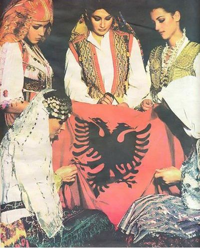
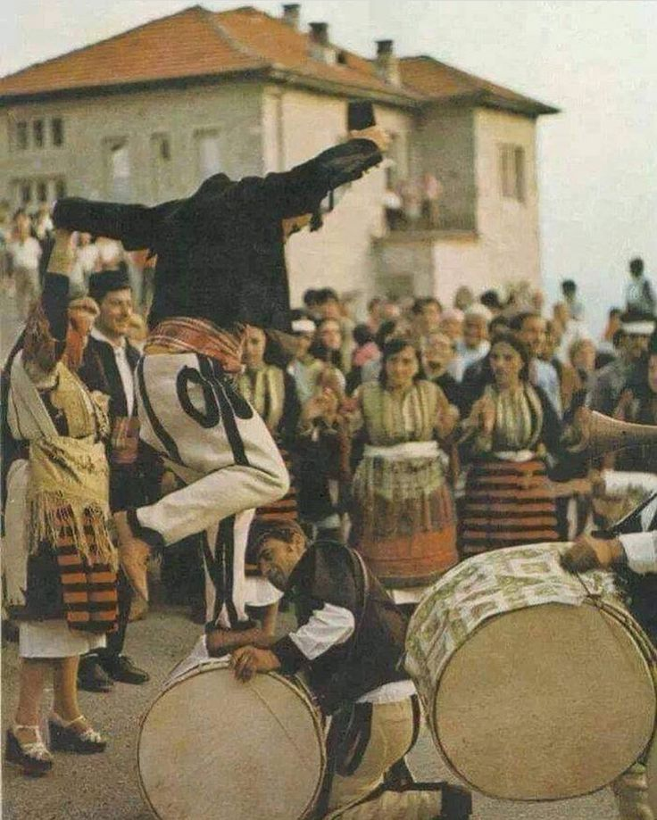
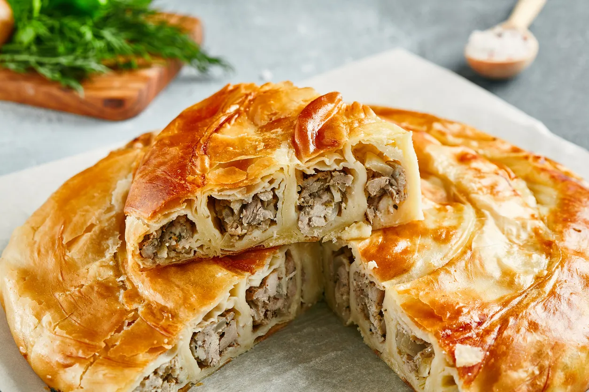
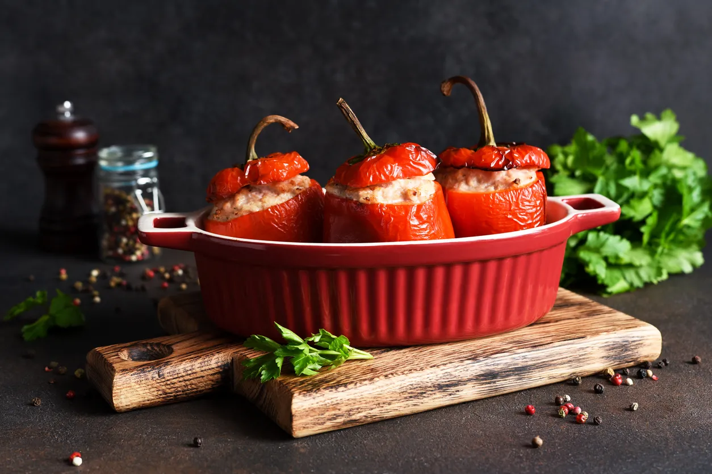
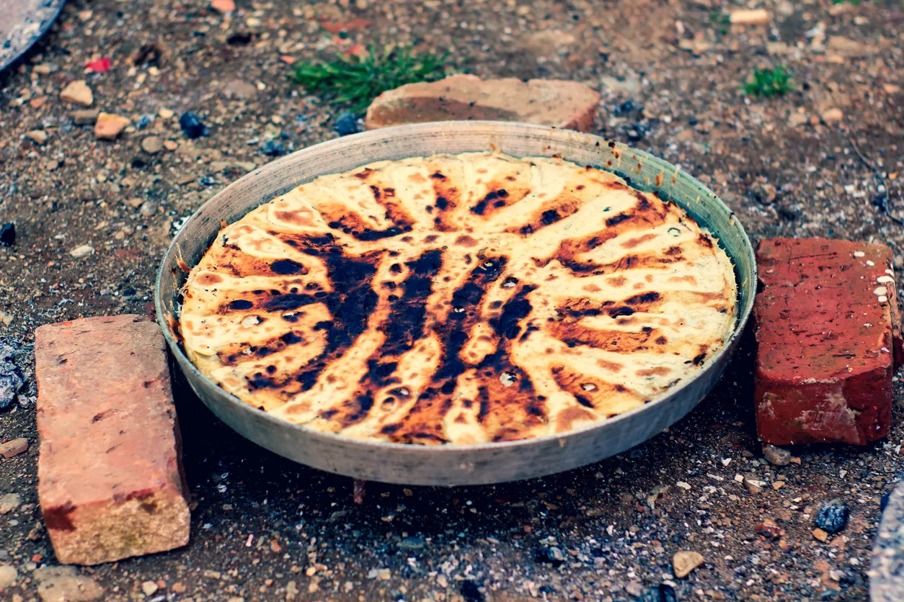
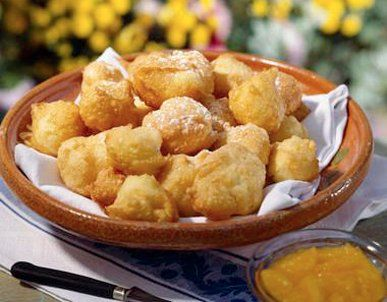
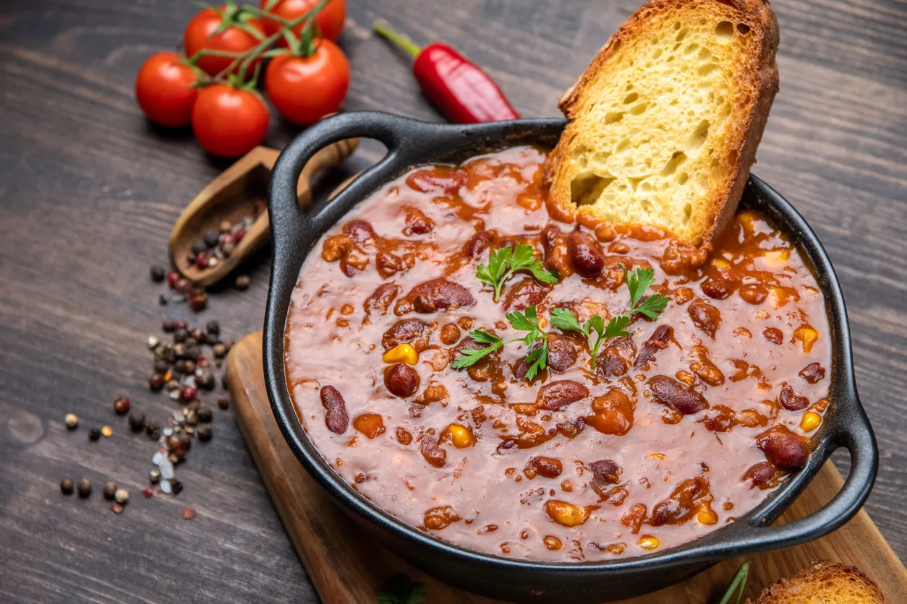
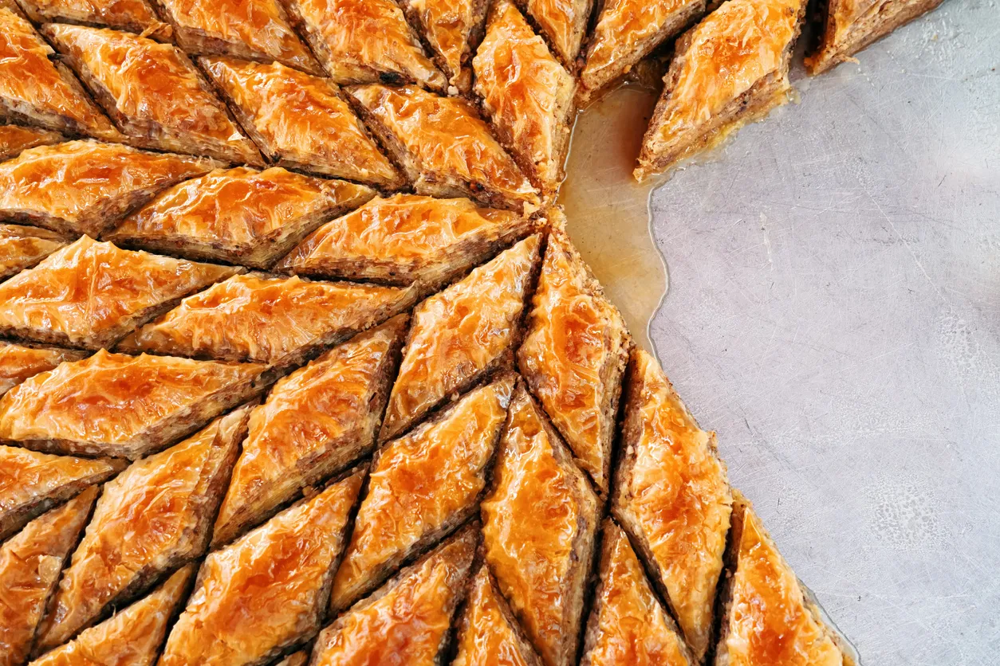

Cultural Life

Cultural development in Albania was handicapped by more than four decades of communist rule. The government imposed strict censorship on the press, publications, and the performing arts. The succeeding governments have made a conscious effort to encourage and preserve the country’s rich folklife. Albania is known for its traditions of hospitality, which are based on the kanun (“code”), a set of unwritten laws devised in the 15th century by Prince Lekë Dukagjin, an Albanian feudal lord. The kanun governs all social relations, including those involving marriage, death, family, and religion. Some Albanians still follow its customary laws, including the right to avenge a killing; gjakmarrje (“blood feuds”) were known to occur in parts of northern Albania into the 21st century.

In addition to traditional religious holidays, pagan holidays and folklore play a role in Albanian life. Agricultural fairs and religious festivals occur throughout the year and often include competitions that highlight highly skilled sports, which are occasionally contested in the national stadium in Tirana. Dita e Verës (Spring Day) is celebrated in mid-March in Elbasan. Folkloric festivals take place in towns across the country; one of the largest is the National Festival of Folklore held in Gjirokastër, a historic town that was designated a UNESCO World Heritage site in 2005. Albania’s independence is celebrated throughout the country on November 28.
Traditional Albanian Food
Byrek

Byrek is an appetiser, a snack, a staple at breakfast and is even eaten as a late evening snack.This dish is very typical in all Balkan countries. Albanians usually spell it byrek, some other Balkan countries call it burek and in Turkey it is called börek. However it is spelled, the recipe is largely the same and refers to layers of wheat-based phyllo dough filled with vegetables, meat or cheese, and probably dates back to the Ottoman Empire.
The most common Albanian byrek is filled with cheese or tomatoes, sometimes spinach and meat. It is cooked in a large pan in the oven and then cut into squares, triangles or rectangles for serving.
There are also individual byrek, usually in the shape of a rolled sausage. Because byrek is so popular in Albania, you can find it in every bakery in the country and in most restaurants.
Tavë kosi

Albania’s national dish is exactly what you’ll want for dinner. Tavë kosi is not the most elaborate of Albanian dishes. In fact, it’s more like an upscale of leftovers than a scratch recipe. The two staples of the dish are lamb and yogurt, two ingredients that were precooked for the initial meal then reused to create tavë kosi. The lamb is either boiled, sauteed, or grilled before being smothered in yogurt and baked alongside rice. It’s essentially a casserole and is a comfort dish that will have you longing for evenings in Tirana.
Speca me gjizë

Speca me gjize is a picture on a plate, a vibrant presentation of ingredients grown across the Albanian countryside. Green, yellow, orange, and red peppers are halved and filled with a heavy hand of rice, spices, and cottage cheese. The packed peppers are popped in the oven and baked. Healthy and hearty, it’s a simple yet savory meal that is ideal for the vegetarian vagabond.
Flia

Similar to byrek and quite popular in neighboring Kosovo, it’s a pastry that’s layered with fillings like yogurt. You’ll spot flia in an instant thanks to its triangular shape and you shouldn’t be surprised to find it served accompanied by sour milk, honey, jam, or even vegetable spread. This dish is common in the regions of northern Albania. It is a simple recipe often prepared at home or served in traditional local restaurants.
Petulla

Fried dough, also called petulla, is a popular dish throughout the Balkans. In Albania, fried dough is traditionally served in many different ways and is usually eaten as a snack or with dinner. It is more like a doughnut, but has a heavier consistency and is crispy on the outside and soft on the inside.
Fasule

Fasule is a white bean soup that is highly prized in Albanian cuisine. It was often prepared during the time of the Albanian famine, as it is very cheap and filling. After the end of the famine, the white bean soup kept its popularity.
The soup is prepared with tomato sauce, onions and white beans and often served with pickled vegetables or yoghurt. Albanians often eat this soup with kulac, a homemade bread.
Albanian Bakllava

Bakllava or baklava is a crunchy dessert made with honey or syrup, walnuts and layers of filo dough.
While baklava is typical of many countries, from Turkey to Azerbaijan, from Iran to Morocco, Albanian baklava is particularly good because walnuts are more commonly used in Albania instead of the peanuts that are most commonly used.
The bitterness of the walnuts makes the baklava a little less sweet and the use of diluted honey, produced fresh in Albania, makes it lighter than some of the really sweet, syrupy versions.
Gjel deti me pershesh

Gjel deti me përshesh is a traditional dish from central Albania: baked turkey with bread puree
This dish is usually prepared on holidays, especially Christmas or New Year’s Eve. Përshesh is traditionally prepared with corn bread crumbled into the turkey’s gravy, with the meat and liver cut into small pieces, onions or leeks, and herbs and spices.
The turkey is baked separately and served at the end together with përshesh over which melted butter is poured. The baked turkey and the përshesh together make an amazing, unique taste.